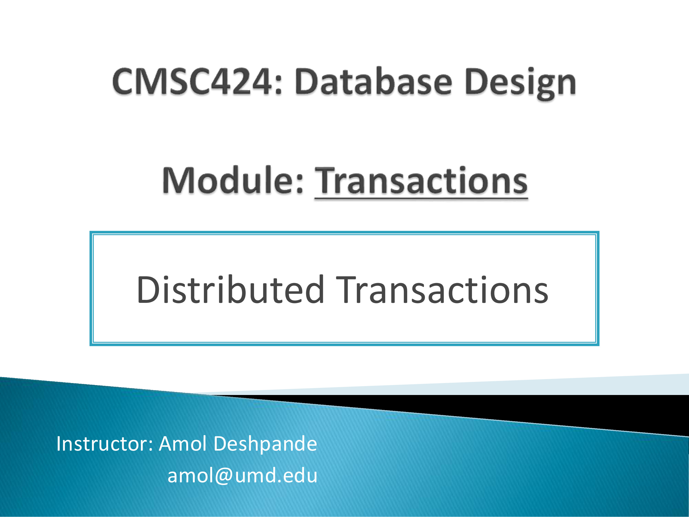
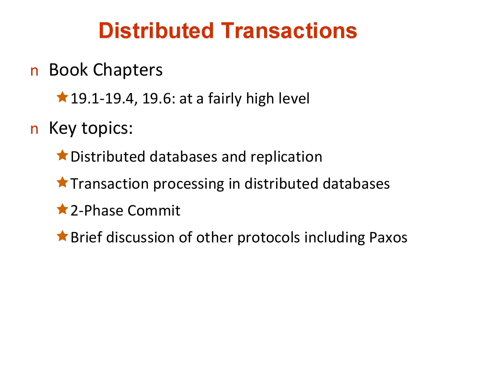
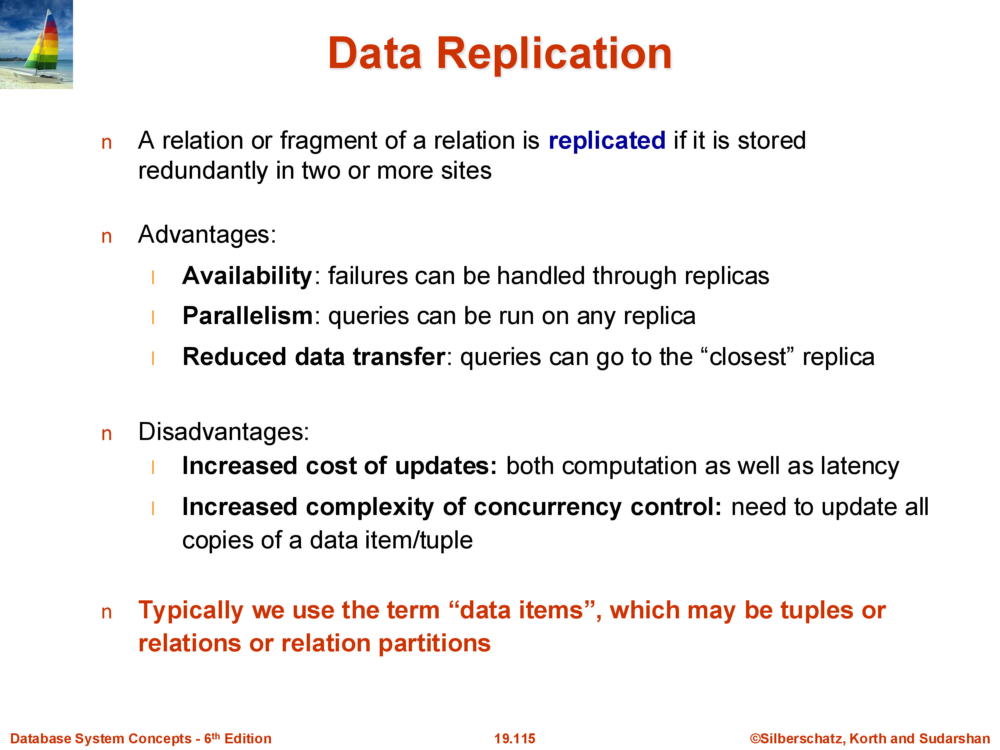
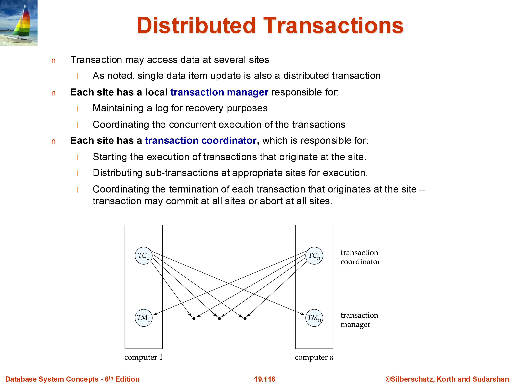
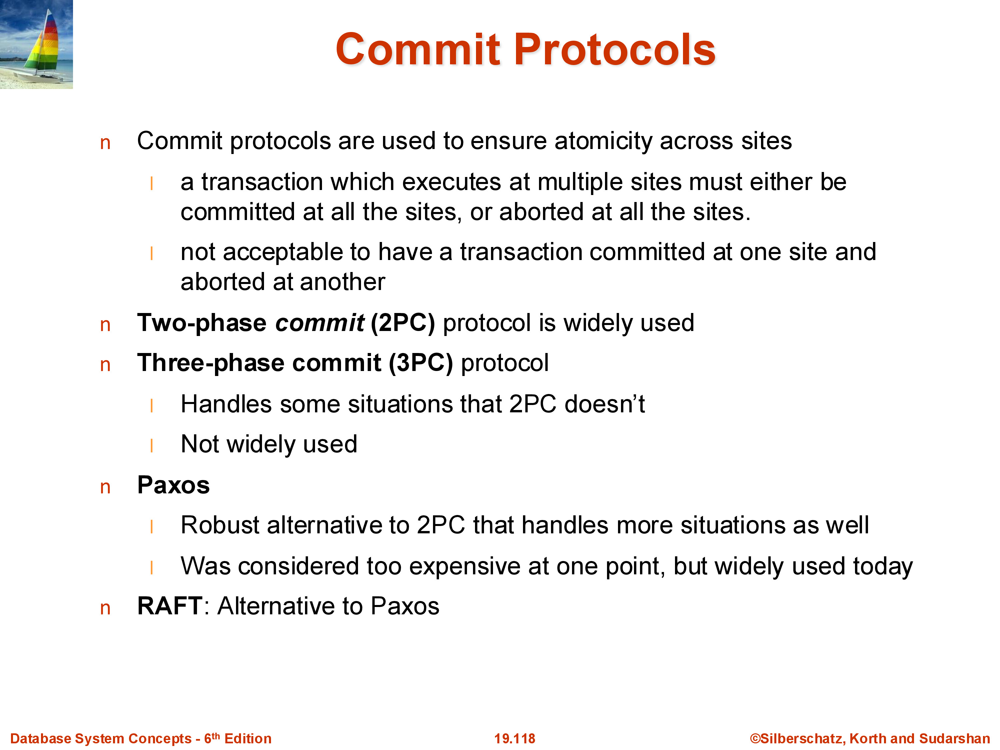
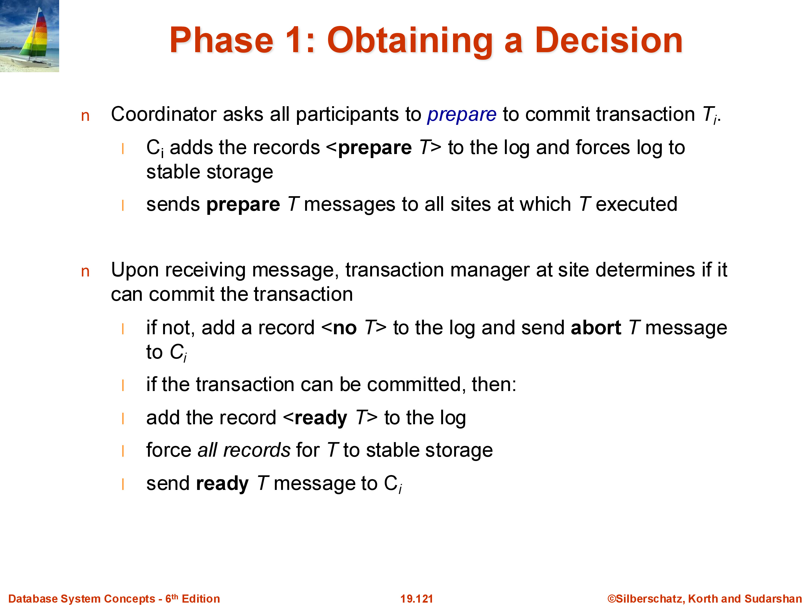
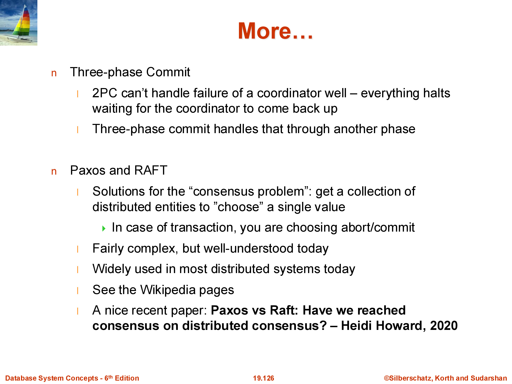

CMSC424: Transactions — Distributed Transactions and Two-Phase Commit
Instructor: Amol Deshpande
1. Distributed Databases and Why They Exist
A distributed database consists of machines at geographically separate locations, each holding some portion of the data, connected by a wide-area network. This is distinct from a parallel database, where machines are co-located — in the same rack or data center — and connected by a fast, low-latency interconnect. The algorithms discussed in this set of notes apply primarily to the distributed setting, where network latency is significant and failures are frequent.

Distributed databases exist primarily out of necessity, not for raw performance. A company like Facebook has offices and customers around the world; storing all data in a single location and routing every request there would produce unacceptable latency for users far from that location. The data must be physically close to its consumers. A user in China reading their feed should hit a machine in China, not route a request to a data center in California.
The complication is that the data is not purely local. A user’s posts are read by friends on every continent; a product listing on an e-commerce site must be visible from anywhere. This forces data to be replicated — stored at multiple locations simultaneously. Replication improves read performance and availability, but it creates a fundamental problem: when the data changes, every replica must be updated. Guaranteeing that these updates happen atomically, across machines that can fail at any time, is the central challenge of distributed transactions.
This area has seen enormous research activity over the past two decades. Systems like Google Spanner, Amazon Aurora, and CockroachDB — essentially a distributed PostgreSQL — are all built around solutions to this problem, and it continues to be an active area of both academic research and industrial engineering.
2. Replication and Quorum Systems

Consider a simple setting: a relation \(R\) is replicated on three machines \(M_1\), \(M_2\), and \(M_3\). Reads can be served by any single machine — whichever is closest or least loaded — so read performance is excellent. But every update to \(R\) must be propagated to all three machines. The naive approach is to require a write to all three before acknowledging success. This guarantees consistency but creates a significant latency problem: the write cannot complete until the slowest machine (or network path) responds.
A quorum system offers a more flexible tradeoff. Define a read quorum \(r\) and a write quorum \(w\) such that \(r + w > N\) (where \(N\) is the total number of replicas). A read operation contacts any \(r\) machines and takes the value with the latest timestamp among the responses. A write operation contacts any \(w\) machines and waits for confirmation from all \(w\).
The invariant \(r + w > N\) guarantees that every read quorum and every write quorum overlap by at least one machine. That overlapping machine holds the most recent write, so a reader that contacts \(r\) machines and picks the latest timestamp will always find the current value.
For \(N = 3\):
- Option 1: \(r = 1\), \(w = 3\). Reads are fast (contact any one machine); writes are slow (must update all three and wait for all three).
- Option 2: \(r = 2\), \(w = 2\). Reads contact two machines and pick the latest; writes contact any two and acknowledge once both confirm. Writes are faster (only two machines must respond), and the system tolerates one machine failure without blocking reads or writes.
- Option 3: \(r = 3\), \(w = 1\). Reads contact all machines; writes update only one. This is rarely practical — reads are expensive and any single machine failure blocks reads.
Quorum systems are important in practice because they reduce write latency (Option 2 requires only two round-trips instead of three) while maintaining consistency, and they improve fault tolerance: if one machine is temporarily unreachable, Option 1 blocks writes entirely, whereas Option 2 can continue as long as two machines are available.
3. The Distributed Transaction Problem

A distributed transaction is one whose execution spans multiple machines. This can arise because a single data item is replicated across machines and all replicas must be updated, or because a transaction accesses distinct data items that happen to reside on different machines. In both cases, the problem is the same: how do we guarantee that the transaction either commits on all machines or on none?
The ACID atomicity requirement is strict: the database must never be left in a state where the transaction committed on some machines but not others. In the replication example, this would mean one replica holds the new value while another still holds the old value — a permanent inconsistency that no future operation can repair without knowing which machines are correct.
Formalizing the commit requirement: a distributed transaction \(T\) is committed if and only if a <T, COMMIT> log record has been durably written on every participating machine. A state in which some machines have the commit record and others do not is invalid and must be prevented by the commit protocol.
We retain all the assumptions from centralized recovery: disks are durable, the only permanent storage is disk, and log records are written via write-ahead logging before the actions they describe.
4. Failures in the Distributed Setting
Distributed systems face all the failure modes of centralized systems, plus several that are unique to the distributed environment.

Site failure: any machine can crash at any time. A machine that crashes stops sending and receiving messages. The protocols must handle this without corrupting the database state.
Message loss: a message sent from one machine to another may be dropped by the network. Reliable transport protocols such as TCP/IP handle this transparently in most cases, so we generally assume that messages are eventually delivered.
Link failure: a specific network path between two machines may become unavailable. As with message loss, routing protocols typically find alternative paths, so this is not usually an independent concern.
Network partition: a more serious failure in which the network splits into two (or more) groups of machines that cannot communicate with each other, even though all machines within each group are alive and healthy. A partition is indistinguishable from a total machine failure from the outside: machine \(M_1\) cannot tell whether \(M_2\) is down or merely unreachable. This ambiguity is a fundamental challenge for distributed protocols — any decision made without hearing from \(M_2\) risks being wrong if \(M_2\) is still running and making its own decisions.
These failure modes interact with each other. A protocol that handles site failures may stall under a network partition; a protocol that handles partitions may perform poorly when machines are healthy but slow. Designing protocols that are correct under all combinations of failures is what makes this problem hard.
5. Two-Phase Commit
The two-phase commit (2PC) protocol is the foundational algorithm for ensuring that a distributed transaction commits on all participating machines or on none. It is not the most efficient protocol in use today, but it is conceptually clear and forms the basis for understanding more sophisticated schemes.
5.1 Roles
Every machine in the distributed system runs a transaction manager (TM) responsible for local recovery, locking, and log management. For a given distributed transaction, one machine is designated the coordinator — responsible for orchestrating the commit decision — while all other participating machines are subordinates (also called participants or cohorts). The coordinator is often the machine that initiated the transaction, though it may be a dedicated coordination service.
5.2 The Protocol

Phase 1 — Prepare phase:
The coordinator decides the transaction is ready to commit and sends a PREPARE message to every subordinate. Each subordinate receives the PREPARE message and makes a local decision:
- If the subordinate can commit (all its local operations have succeeded, it holds the necessary locks, and it is prepared to make the transaction permanent), it writes a
<T, PREPARE>log record to its local log disk, forcing it to disk before sending any response. It then sends aYESvote to the coordinator. - If the subordinate cannot commit for any reason (a local constraint violation, insufficient resources, or an internal error), it sends a
NOvote and can immediately abort locally.
The write-ahead requirement on the prepare record is critical: the subordinate must have the prepare record on disk before it sends YES. If the machine crashes after sending YES but before writing the prepare record, it will not know it voted yes when it recovers, and the protocol breaks.
Phase 2 — Commit phase:
The coordinator collects votes from all subordinates. If every subordinate voted YES, the coordinator writes a <T, COMMIT> record to its own log disk and sends a COMMIT message to all subordinates. If any subordinate voted NO (or if any subordinate is unreachable within a timeout), the coordinator writes <T, ABORT> and sends ABORT to all.
Each subordinate receives the coordinator’s decision, writes the corresponding <T, COMMIT> or <T, ABORT> log record to its own disk, applies or reverses its local changes accordingly, and sends an acknowledgment to the coordinator.
In total, 2PC involves four rounds of communication: PREPARE → YES/NO → COMMIT/ABORT → ACK.
5.3 Failure Scenarios
Subordinate does not respond to PREPARE: the coordinator waits up to a timeout interval. If no response arrives, the coordinator treats it as a NO vote and sends ABORT to all. At this point in the protocol, the coordinator is free to abort unilaterally — no subordinate has yet committed anything.
Subordinate crashes after voting YES: the subordinate wrote a <T, PREPARE> record to disk before voting. When it recovers and performs its local recovery, it sees the prepare record for \(T\). It cannot decide unilaterally what to do — it already committed to voting yes, so it must wait to learn the coordinator’s decision. The subordinate contacts the coordinator and asks: did transaction \(T\) commit or abort? The coordinator, which has the commit/abort record on its own disk, replies. This contact may happen seconds, minutes, or even days after the crash — however long recovery takes. The protocol handles it correctly because the coordinator’s decision is permanent on disk.
Coordinator crashes after all subordinates voted YES: this is the critical weakness of 2PC. All subordinates have written prepare records and voted yes; they are now blocked — they cannot commit or abort unilaterally because doing either could produce inconsistency (committing alone would leave other machines uncommitted; aborting alone might conflict with a commit the coordinator already decided). They must wait for the coordinator to recover and re-send its decision. If the coordinator is down for an extended period, the transaction and all resources it holds (locks, buffer pages) are frozen for the duration. This is the blocking problem of two-phase commit.
6. Recovery from Failure During 2PC

The log records written by each machine determine how recovery proceeds when a machine comes back up after a crash. For a given transaction \(T\), the recovering machine examines its log:
- If it sees
<T, COMMIT>or<T, ABORT>: the transaction is already decided. Recovery applies or reverses the changes as normal. Nothing further is needed. - If it sees
<T, PREPARE>(a “ready” record) but no commit or abort: the machine voted yes but never received the coordinator’s decision. It must contact the coordinator to learn the outcome and then apply the decision. - If it sees
<T, START>and some update records but no prepare record: the machine never voted yes. It can unilaterally abort \(T\) — writing<T, ABORT>locally — without consulting the coordinator, because a machine that never voted yes has made no commitment. - If it sees no records at all for \(T\): \(T\) was not in progress on this machine; nothing to do.
The coordinator must retain its commit/abort decision for any transaction whose subordinates may not yet have received it. In practice, the coordinator keeps this information until it has received acknowledgments from all subordinates, and it retains the log record on disk indefinitely so that it can respond to late-recovering subordinates.
7. Limitations of Two-Phase Commit
The blocking problem under coordinator failure is the primary reason that 2PC is rarely used in new systems today. In a large deployment handling millions of concurrent transactions, even a brief coordinator outage can freeze thousands of transactions, holding their locks and preventing other work from proceeding. In a replication setting where every write is a distributed transaction, coordinator failures are not rare events — they happen regularly at scale.
Three-phase commit (3PC) was proposed to address the blocking problem by adding a third round of messages that allows subordinates to elect a new coordinator if the original one fails. In theory this solves the blocking problem, but 3PC does not handle network partitions correctly — under a partition, the two halves of the network can independently proceed to different decisions, violating atomicity.
Paxos and its modern reformulation Raft are the consensus protocols used in production distributed systems today. Rather than designating a fixed coordinator, Paxos allows any machine to propose a value and guarantees that all machines eventually agree, even under failures and network partitions (as long as a majority of machines remain reachable). Paxos frames distributed commit as a special case of consensus: getting a collection of distributed processes to agree on a single value. Google Spanner, Amazon DynamoDB, and CockroachDB all use variants of Paxos or Raft. These protocols are significantly more complex than 2PC and are covered in graduate-level systems and database courses.
8. Connection to Broader Consensus Problems

The distributed commit problem — getting multiple machines to agree on whether a transaction committed — is a special case of the general consensus problem: how do a collection of distributed processes reach agreement on a value when any process can fail at any time?
Paxos and Raft assume that all participants are honest — they follow the protocol faithfully. This assumption is reasonable for a database cluster managed by a single organization. It breaks down in open, adversarial settings like blockchain networks, where participants may be actively malicious: they might lie about their votes, replay old messages, or try to game the protocol.
Blockchain consensus protocols such as those underlying Bitcoin solve a harder version of the problem. They assume a potentially large number of participants (thousands or millions) who cannot be trusted, and they must reach consensus without a designated coordinator. Bitcoin’s solution is proof of work: to add a block to the chain, a participant must solve a computationally expensive puzzle. The cost of computing the puzzle makes it prohibitively expensive for a malicious participant to dominate — they would need to outpace the combined computational power of all honest participants. The participant who solves the puzzle first proposes the next block, acting as a temporary leader for that decision.
The connection to distributed databases is conceptual: both are trying to solve consensus in the presence of failures, but they differ in their failure models (crash failures vs. Byzantine/malicious failures) and their scale (tens of machines vs. millions). These parallels are increasingly relevant as the fields of distributed databases and decentralized systems continue to influence each other.
9. Summary
Distributed transactions arise whenever a transaction must update data on more than one machine — whether because a data item is replicated or because distinct items live on separate machines. The fundamental requirement is that the transaction commits on all machines or on none, with no partial commits.
Key concepts:
- Quorum systems allow reads and writes to contact a subset of replicas (\(r\) for reads, \(w\) for writes, \(r + w > N\)) rather than all replicas, trading some read latency for reduced write latency and better fault tolerance.
- Failure modes in distributed systems include site failures, message loss, link failures, and network partitions. Network partitions are indistinguishable from machine failures from the perspective of a remote observer.
- Two-phase commit (2PC) coordinates the commit decision through a designated coordinator. In Phase 1 (prepare), subordinates vote yes or no and write prepare log records. In Phase 2 (commit), the coordinator sends its decision; subordinates write commit or abort records and acknowledge. The prepare log record must be durable before voting yes; the coordinator’s commit/abort decision must be durable before sending it.
- 2PC’s blocking problem: if the coordinator fails after all subordinates have voted yes, the subordinates are blocked indefinitely waiting for the coordinator’s decision.
- Paxos and Raft solve the blocking problem by eliminating the fixed coordinator and guaranteeing progress as long as a majority of machines are reachable. These are the protocols used in production systems today.
This concludes the treatment of transactions in CMSC 424. The full arc — from ACID properties and serializability, through lock-based and multi-version concurrency control, through log-based recovery, to distributed commit — represents the core of what a database system must do to be a reliable foundation for applications.